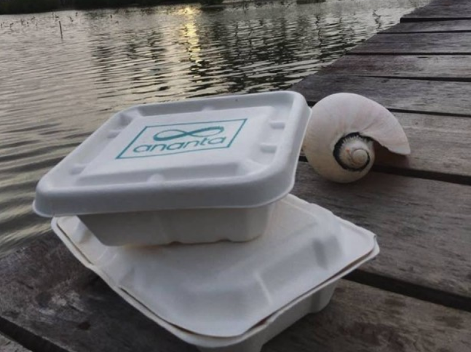
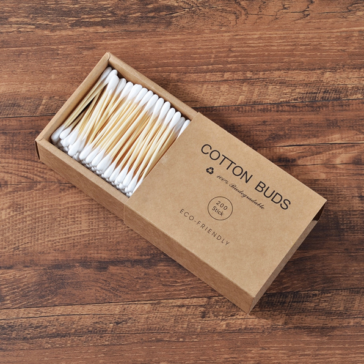

Some Of Eco-Friendly Products In Sri-Lanka
5.Ecofriendly lunch-boxes
Ananta Sustainables provides earth friendly packaging solutions with their biodegradable lunch boxes.
6.Reusable Grocery bags

You can get your reusable grocery bags from Cally Re Usable Bags. The grocery bag combo pack is a good solution for polythene free grocery shopping
1.Bamboo cotton buds
Today we don’t need to use plastic cotton buds, there’s more eco-friendly option – bamboo cotton buds. You can use bamboo cotton buds easily to clean not only your ears and apply or remove makeup but also clean hard-to-reach places like keyword of your laptop.
2.Wooden toothbrushes

Wooden toothbrushes are becoming popular because they are eco-friendly and biodegradable. The favored material for wooden toothbrushes is bamboo because it is easy to grow and has antimicrobial properties.
3.Wooden cutlery

Wooden cutlery is an eco friendly alternative to plastic disposable cutlery. This product is made of solid birchwood and is disposable and biodegradable.
4.Kolapath Plates

Made of 100% biodegradable material, ready to use, discard after use.Available sizes in 6”, 8” and 10.
More information about some of Eco-Friendly products in Srilanka
| Eco-Friendly Products | Price (Rs.) | Production Process | Health benefits |
|---|---|---|---|
| 1.Bamboo cotton buds | Rs.450 | These are made from wood and paper glue. The raw bamboo stick needs less resources to be made and is sturdier. | The most vital quality of bamboo is its environmentally friendly. |
| 2.Wooden toothbrushes | Rs.189 | Bamboostocks are boiled in pure water, dried, heat treated, carved and a natural wax coat applied. Bristles are pressure implanted intoeach hole. | Liminates unnecessary waste while giving you the same quality of cleaning that a plastic brush can offer. Also easy to recycle. |
| 3.Wooden cutlery | Rs.625 | These are made with wood and biodegradable. | Wooden cutlery are non-reactive and won’t leach harmful chemicals into your food and won’t react with the acids in foods or leave a metallic taste, like metal spoons. |
| 4.Kolapath Plates | Rs.395 | Each plate is made by a whole areca leaf. | These are made without exposing to any chemicals or glues, Kolapath plates are made in love with nature. |
| 5.Eco-friendly lunch boxes | Rs.425 | Produced by minimizing carbon footprint throughout manufacturing and delivery of product. | Is made from materials that are healthy throughout the life cycle. |
| 6.Reusable Grocery bags | Rs.1089 | Reusable grocery bags made from recycled materials are significantly more environmentally friendly than similar bags made from virgin plastic materials. | By using a reusable bag, you are not only reducing the amount of non-renewable resources necessary to produce plastic bags, but you’re also reducing the amount of money your community spends on clean up costs each year. |